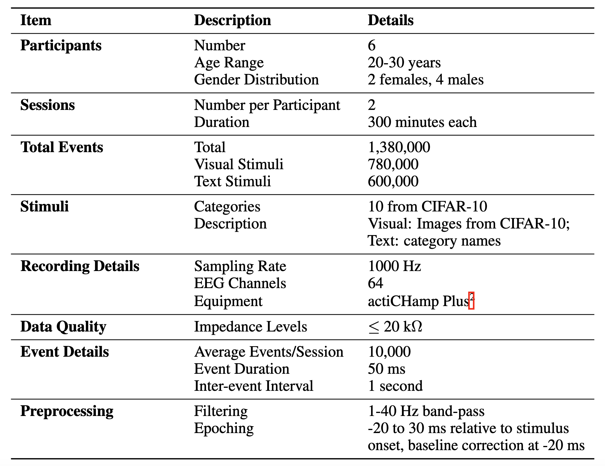
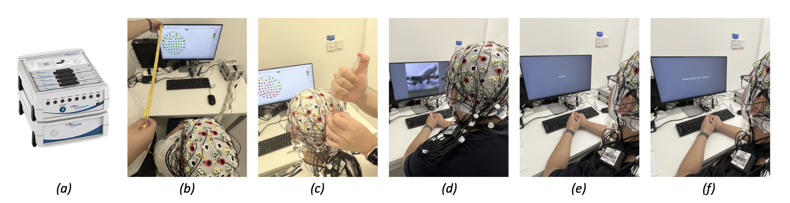
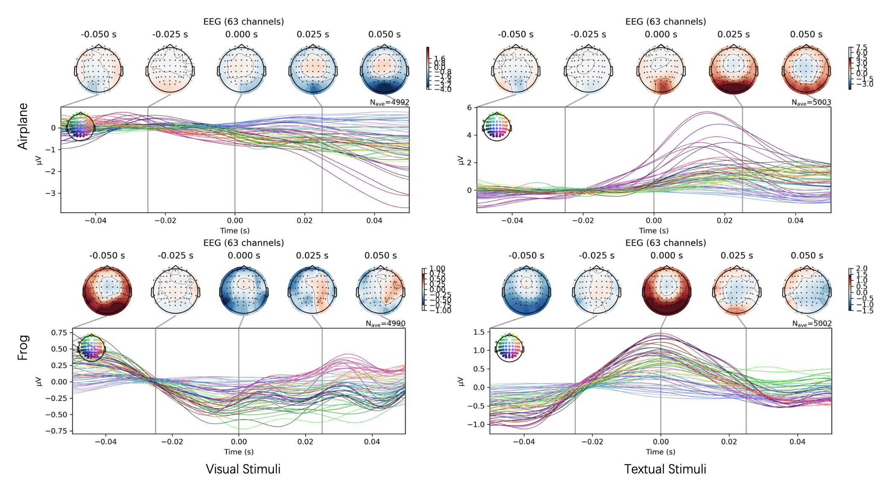
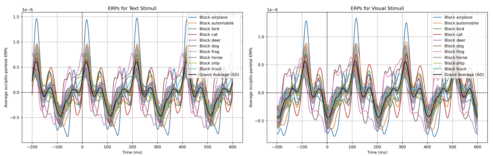
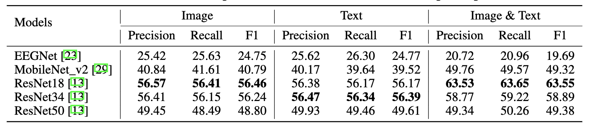
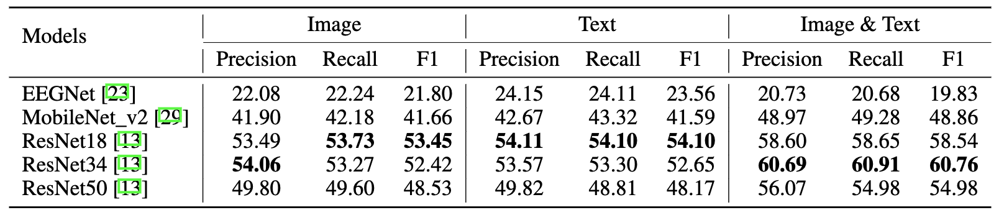
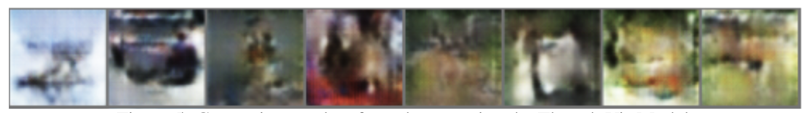

EIT-1M: One Million EEG-Image-Text Pairs for Human Visual-Textural Recognition and More

Abstract
Recently, electroencephalography (EEG) signals have been actively incorporated to decode brain activity to visual or textual stimuli and achieve object recognition in multi-modal AI. Accordingly, endeavors have been focused on building EEG-based datasets from visual or textual single-modal stimuli. However, these datasets offer limited EEG epochs per category, and the complex semantics of stimuli presented to participants compromise their quality and fidelity in capturing precise brain activity. The study in neuroscience unveils that the relationship between visual and textual stimulus in EEG recordings provides valuable insights into the brain's ability to process and integrate multi-modal information simultaneously. Inspired by this, we propose a novel large-scale multi-modal dataset, named EIT-1M, with over 1 million EEG-image-text pairs. Our dataset is superior in its capacity of reflecting brain activities in simultaneously processing multi-modal information. To achieve this, we collected data pairs while participants viewed alternating sequences of visual-textual stimuli from 60K natural images and category-specific texts. Common semantic categories are also included to elicit better reactions from participants' brains. Meanwhile, response-based stimulus timing and repetition across blocks and sessions are included to ensure data diversity. To verify the effectiveness of EIT-1M, we provide an in-depth analysis of EEG data captured from multi-modal stimuli across different categories and participants, along with data quality scores for transparency. We demonstrate its validity on two tasks: 1) EEG recognition from visual or textual stimuli or both and 2) EEG-to-visual generation.
Overview of our EIT-1M dataset

Hardware Setup
We recorded data using a 64-electrode actiCHamp Plus system, digitized at a rate of 1024 Hz with 24-bit A/D conversion. The montage was arranged according to the international 10-20 System, and the electrode offset was kept below 40 mV. A 22-inch Dell monitor with a resolution of 1080p at 60 Hz was used to display the visual and textual stimuli. (a) Experimental setup with monitor 80 cm from participant. (b) Injecting conductive gel. (c) Visual stimuli. (d) Textual stimuli. (e) Speech stimuli.
EEG Topographic Maps and Corresponding Signals Analys
Example EEG topographic maps and corresponding signals at all 63 electrodes averaged over events for the participant viewing visual stimuli left column viewing the airplane (1st row) and frog (2rd row) images from the CIFAR-10 dataset, and events for the participant viewing textual stimuli right column viewing the airplane (1st row) and frog (2rd row) text from the category names of CIFAR-10 dataset. These maps highlight individual and common brain activity patterns associated with both image and text presentation. An event is defined as a specific time point in the experiment.
ERP Analysis
ERPs averaged over occipital and parietal electrodes for the participant viewing stimuli from (a) visual images and (b) the category text. Shaded areas around the grand average ERP represent standard deviations at each time point.
Benchmark Experiments
To benchmark our EIT-1M, we demonstrate its validity on two tasks: 1) EEG recognition from visual or textual stimuli or both and 2) EEG-to-visual generation.
  